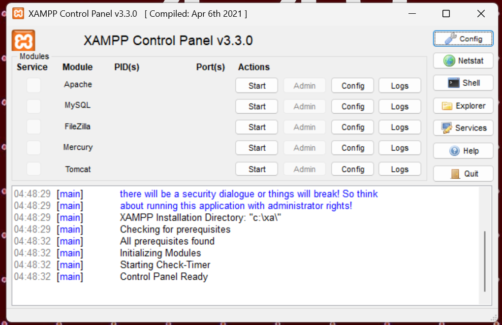
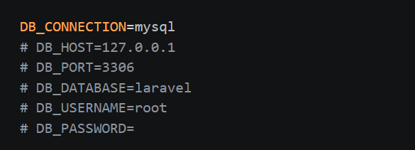

Report 2 — Migration, Seeding, Routing, Model, Controller, dan View
I. Tujuan Praktikum
- Memahami penggunaan migration pada Laravel.
- Memahami penggunaan seeding database.
- Memahami konsep routing pada Laravel.
- Memahami penggunaan model dan controller.
- Memahami penggunaan view menggunakan Blade Template.
- Membuat aplikasi CRUD sederhana menggunakan Laravel.
II. Dasar Teori
Laravel merupakan framework PHP berbasis MVC (Model View Controller) yang menyediakan berbagai fitur untuk mempermudah pengembangan aplikasi web.
Migration digunakan untuk mengelola struktur database menggunakan kode program. Seeder digunakan untuk mengisi data awal pada database. Routing digunakan untuk menentukan URL dan respon aplikasi.
Model digunakan untuk berinteraksi dengan database menggunakan Eloquent ORM, sedangkan Controller digunakan untuk mengatur logika aplikasi dan menghubungkan model dengan view.
View pada Laravel menggunakan Blade Template Engine yang mempermudah pembuatan tampilan website secara dinamis dan terstruktur.
III. Langkah-Langkah Praktikum
-
Menjalankan XAMPP
Langkah pertama yang dilakukan yaitu menjalankan Apache dan MySQL pada XAMPP. Apache digunakan sebagai web server sedangkan MySQL digunakan sebagai database server untuk Laravel.
-
Konfigurasi Database
Selanjutnya melakukan konfigurasi database pada file .env agar Laravel dapat terhubung dengan database MySQL.DB_CONNECTION=mysql DB_HOST=127.0.0.1 DB_PORT=3306 DB_DATABASE=praktikum_laravel DB_USERNAME=root DB_PASSWORD=
Konfigurasi tersebut berfungsi untuk menentukan host database, nama database, username, dan password yang digunakan Laravel.

-
Menjalankan Laravel
Laravel dijalankan menggunakan artisan command agar aplikasi dapat diakses melalui browser.php artisan serve
Setelah perintah dijalankan, Laravel akan memberikan alamat localhost yang dapat dibuka pada browser.

-
Membuat Model, Migration, Seeder, dan Controller
Laravel menyediakan artisan command untuk membuat model, migration, seeder, dan controller secara otomatis dalam satu perintah.php artisan make:model Product -mcs
Perintah tersebut akan menghasilkan file model Product, migration, controller, dan seeder secara otomatis.

-
Membuat Migration
Migration digunakan untuk membuat struktur tabel products pada database Laravel.public function up(): void { Schema::create('products', function (Blueprint $table) { $table->id(); $table->string('name'); $table->integer('price'); $table->text('description'); $table->timestamps(); }); }Struktur tabel terdiri dari id, name, price, description, dan timestamps untuk menyimpan waktu create dan update data.

-
Menjalankan Migration
Migration dijalankan agar tabel products berhasil dibuat pada database MySQL.php artisan migrate
Setelah migration berhasil dijalankan, tabel products akan muncul pada database Laravel.
-
Membuat Seeder
Seeder digunakan untuk menambahkan data awal ke dalam tabel products secara otomatis.Data tersebut nantinya akan dimasukkan ke tabel products menggunakan fitur database seeding Laravel.

-
Menjalankan Seeder
Seeder dijalankan agar data products otomatis tersimpan pada database.Setelah seeder berhasil dijalankan, data product akan muncul pada tabel products di database.

-
Membuat Routing
Routing digunakan untuk menentukan URL yang akan diakses oleh pengguna pada aplikasi Laravel.Route::get('/products', [ProductController::class, 'index']);Route tersebut menghubungkan URL /products dengan function index() pada ProductController.

-
Membuat Controller
Controller digunakan untuk mengambil data dari model kemudian mengirimkannya ke halaman view.public function index() { $products = Product::all(); return view('products', compact('products')); }Function index() mengambil seluruh data product dari database menggunakan model Product.

-
Membuat View
View digunakan untuk menampilkan data products pada halaman website menggunakan Blade Template.@foreach ($products as $product) <li>{{ $product->name }}</li> @endforeachPerulangan foreach digunakan untuk menampilkan seluruh data product yang ada pada database.

-
Menampilkan Hasil
Setelah seluruh konfigurasi selesai, halaman products berhasil ditampilkan pada browser.http://127.0.0.1:8000/products
Halaman tersebut menampilkan data product yang telah disimpan pada database MySQL.

IV. Latihan CRUD Mahasiswa
-
Membuat Model Mahasiswa
Membuat model Mahasiswa beserta migration, controller, dan seeder menggunakan artisan command Laravel.php artisan make:model Mahasiswa -mcs
Perintah tersebut otomatis membuat file model, migration, controller, dan seeder untuk data mahasiswa.

-
Membuat Migration Mahasiswa
Migration digunakan untuk membuat tabel mahasiswas pada database Laravel.Struktur tabel terdiri dari nama, nim, jurusan, dan timestamps.

-
Menjalankan Migration
Migration dijalankan untuk membuat tabel mahasiswas pada database.Setelah migration berhasil dijalankan, tabel mahasiswas akan muncul pada database MySQL.

-
Membuat Seeder Mahasiswa
Seeder digunakan untuk menambahkan data awal mahasiswa ke database.Data mahasiswa tersebut akan otomatis dimasukkan ke tabel mahasiswas menggunakan fitur seeding Laravel.

-
Menambahkan Seeder ke DatabaseSeeder
Seeder Mahasiswa ditambahkan pada file DatabaseSeeder agar dapat dijalankan oleh Laravel.DatabaseSeeder berfungsi untuk menjalankan seluruh seeder yang ada pada project Laravel.

-
Menjalankan Seeder Database
Seeder dijalankan agar data mahasiswa masuk ke dalam database.Setelah proses seeding selesai, data mahasiswa berhasil tersimpan pada tabel mahasiswas.

-
Menampilkan Hasil
Setelah seluruh konfigurasi selesai, halaman Mahasiswa berhasil ditampilkan pada browser.http://127.0.0.1:8000/mahasiswa
Halaman tersebut menampilkan data mahasiswa yang telah disimpan pada database MySQL.

V. Hasil dan Pembahasan
Berdasarkan praktikum yang telah dilakukan, Laravel berhasil digunakan untuk membuat migration, seeding, routing, model, controller, dan view.
Data produk dan data mahasiswa berhasil disimpan pada database MySQL dan berhasil ditampilkan pada browser menggunakan Laravel Blade Template.
Penggunaan Laravel mempermudah pengembangan aplikasi web karena memiliki struktur yang rapi dan fitur yang lengkap.
VI. Kesimpulan
Dari praktikum yang telah dilakukan dapat disimpulkan bahwa Laravel mempermudah proses pengembangan aplikasi web menggunakan konsep MVC.
Fitur migration, seeding, routing, model, controller, dan view membuat proses pengembangan aplikasi menjadi lebih terstruktur, cepat, dan efisien.
Pada praktikum ini berhasil dibuat aplikasi sederhana CRUD mahasiswa menggunakan Laravel dan database MySQL.